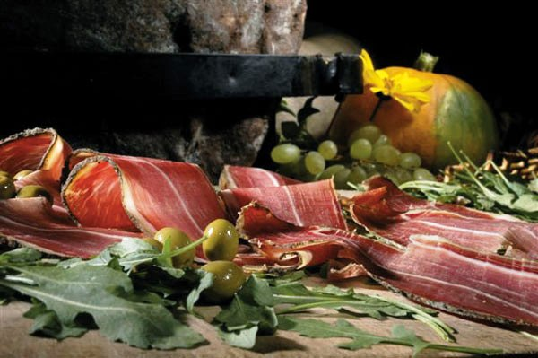
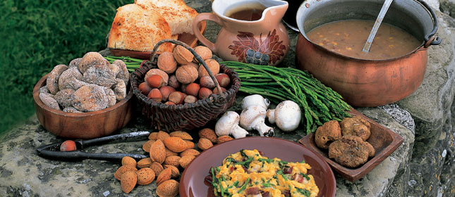
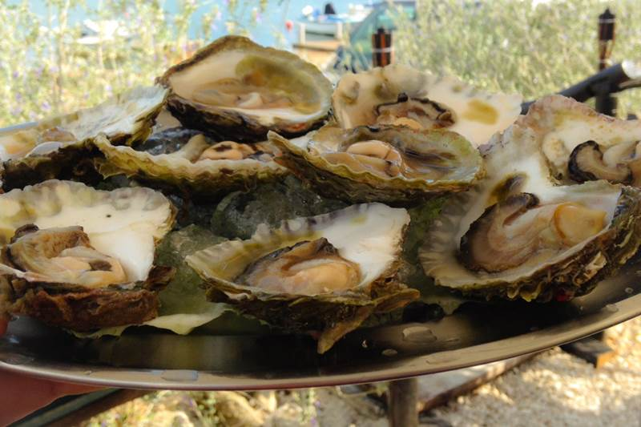
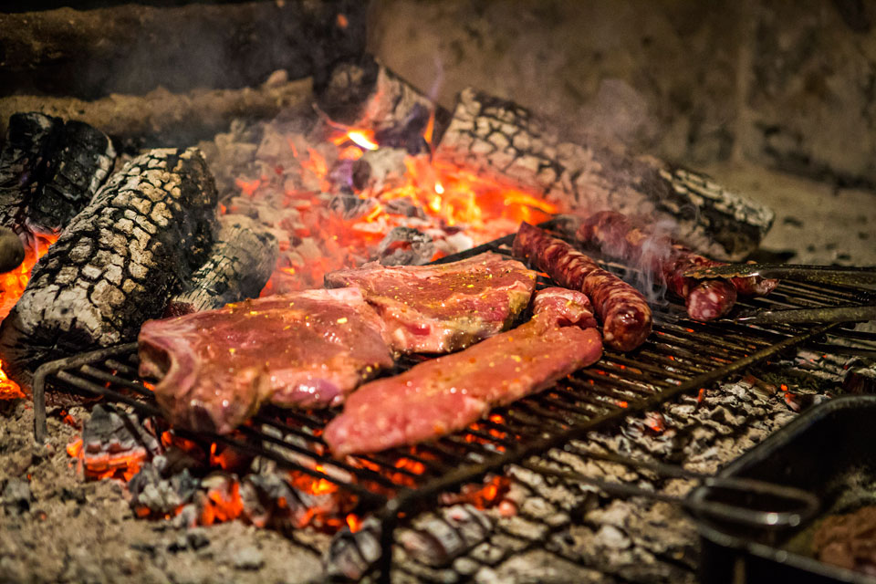
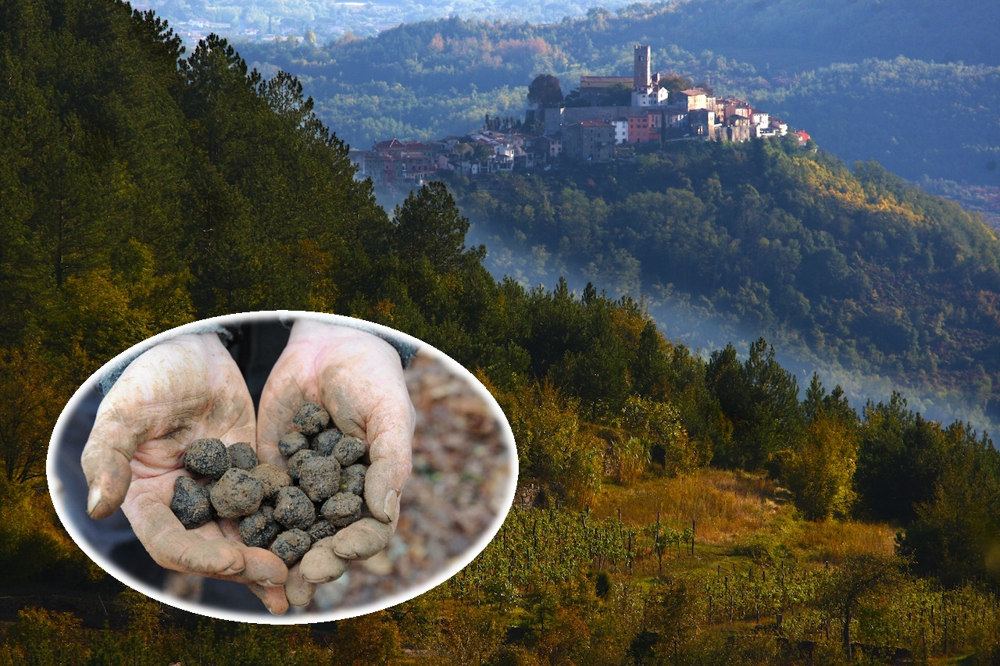
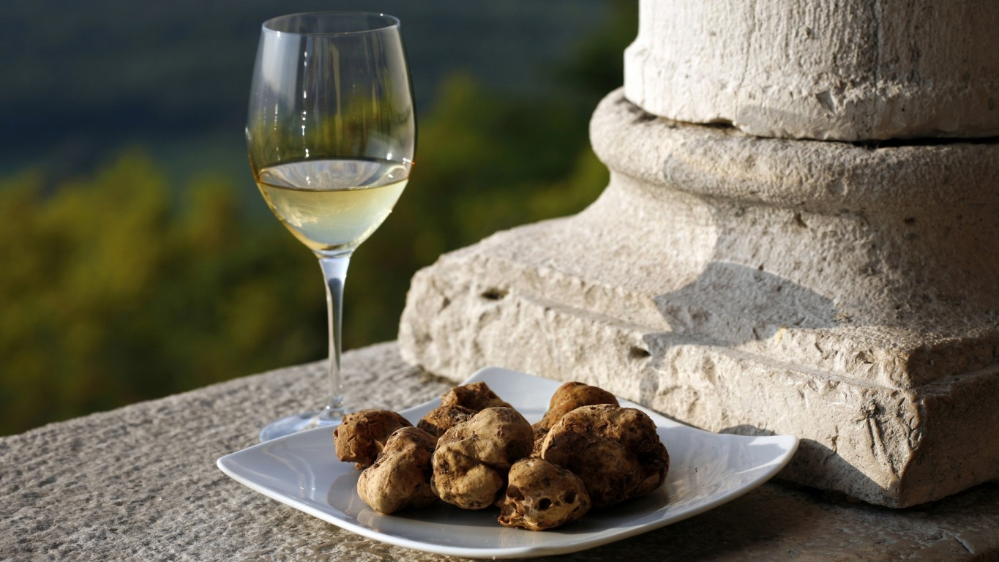
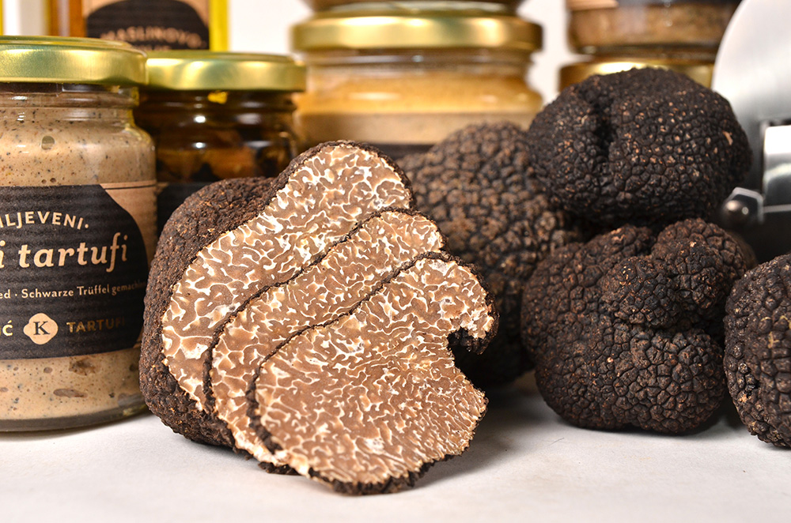

Colada com Itália e Eslovênia, mas com uma costa muito mais bonita 😇 , a Ístria é uma das regiões da Croácia. Aqui tem natureza protegida, construções de 3 mil anos, comida incrível, clima mediterrâneo, é extremamente segura, com moeda desvalorizada contra o Real e croatas super receptivos a turistas. Brasileiros não precisam de visto para vir à Croácia. A maior cidade da região é Pula, onde nós moramos.
Tragam roupas de banho, pois a época é de praia e a água é cristalina e completamente limpa.
Tem muita coisa pra fazer enquanto estiverem aqui, e vamos levar vocês em vários lugares.
A Croácia usa a Kuna como moeda. Atualmente o Real vale ± 2.2 Kunas, e esse valor vem aumentando recentemente, tornando as despesas aqui ainda mais baratas. O custo de vida é baixo. Casas de câmbio aqui não aceitam Real, então troquem antes por Euros ou Dólares para fazerem a conversão quando chegarem dentro da Croácia.
Estará quente, então usem roupas comfortáveis. Vestidos leves. Ninguém de terno. Sapatos bons pra dançar. Salto alto não é nem um pouco necessário, mas se quiser usar sinta-se a vontade. Não há restrição de cor ou material. Venha se sentindo bem que nós também vamos nos sentir bem.
A festa não será nem um pouco formal.
Pula tem um pequeno aeroporto, mas devido à alta procura por turismo costuma ser mais caro voar diretamente para ele do que para cidades próximas. As melhores opções costumam ser Veneza ou Zagreb. Vale a pena verificar os preços no Submarino Viagens, Decolar, Tripadvisor, Bravofly ou Hipmunk. O preço flutua, então colocamos algumas opções abaixo para vocês decidirem melhor. Alguns trechos são via trem—vejam as descrições abaixo 😃. Em qualquer opção é possível trocar ônibus ou trem por carro alugado. Hertz é uma escolha segura.
De longe a melhor opção é alugar apartamentos via Airbnb ou Booking. Há opções para todos os orçamentos. A data do casamento é de alta procura, então convém reservar assim que possível, evitando aumento de preço perto da data. Outras opções podem ser vistas direto no mapa abaixo:
Para quem alugar apartamentos sem café-da-manhã incluído, recomendamos tomar café em uma padaria Mlinar na Flanatička ulica 6. Um sanduíche com pršut, queijo e salada e um cappuccino sai em volta de 20 HRK (± R$ 9). E esse é o sanduíche mais caro. Outras opções saem entre R$ 5–8 no total.
Se não estivermos com vocês levando em algum lugar, boas opções são Šareni Papar, Kod Kadre, Jupiter, Farabuto, Vodnjanka, Kantina e mais um monte de outros. A culinária da região é predominantemente mediterrânea—muito azeite de oliva; limões; alho; carnes e peixes frescos; massas autóctonas; vinhos e queijos.
  E para quem gosta de trufas, Istria é a região onde a maior trufa já foi encontrada, e é tradicionalmente a região produtora nativa na Europa. É possível achar tudo com trufas no mercado, desde azeites até salames com trufas, todos a preços bem razoáveis.
  Para compras em casa vale a pena ir em mercados maiores.
As melhores opções na nossa opinião são Billa, Plodine, Konzum e Spar.
Istrianos falam com fluência italiano, croata, inglês, alemão, dialetos locais e alguns ainda falam línguas da região, como Istrioto e Istrorromeno (!!!). A região é oficialmente bilíngue em croata e italiano, então sinais de trânsito e administração pública sempre estão em ambas as línguas.
A maior parte dos estabelecimentos tem menus em inglês, croata e italiano, com raras exceções. Em alguns momentos, palavras podem parecer ser impossíveis de pronunciar por terem muitas consoantes, como krv. Nesses casos, os croatas adicionam uma vogal que parece um “ã” muito rápido—nesse caso soaria como “cãrv” em português. Segue em guia rápido de como ler as palavras em croata:
| A a | B b | C c | Č č | Ć ć | D d | Đ đ | Dž dž | E e | F f |
| "a" | "b" | "ts" | "tch" (forte) | "tch" (fraco) | "d" | "dj" (fraco) | "dj" (forte) | "e" | "f" |
| G g | H h | I i | J j | K k | L l | Lj lj | M m | N n | Nj nj |
| "g" | "rr" | "i" | "i" semivogal | "q" | "l" | "lh" | "m" | "n" | "nh" |
| O o | P p | R r | S s | Š š | T t | U u | V v | Z z | Ž ž |
| "o" | "p" | "r" tremido | "s" | "ch" | "t" | "u" | "v" | "z" | "j" |
Jagoda → Iágoda (Morango)
Želim → Jélim (Eu quero)
Pršut → Pãrchut (Presunto cru)
Pekara → Pêcara (Padaria)
Kruh → Crurr (Pão)
Mjenjačnica → Mienhatch-nitsa (Câmbio)
Se tiverem outras dúvidas, falem direto conosco via Messenger 😊.
Estamos esperando vocês!